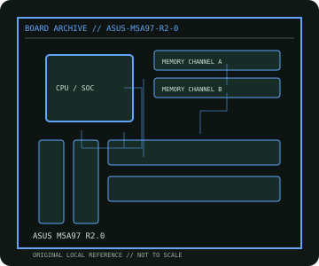

[ INDIVIDUAL COMPONENT // MOTHERBOARDS ]
ASUS M5A97 R2.0
AMD AM3+ 970 desktop platform, 2012. This record documents the named model and its documented variants; confirm the PCB revision, submodel and firmware on the physical unit.

REVISION WARNING: Similar model names and PCB revisions may have different processors, connectors or firmware. Read the silkscreen and assembly code; use the support files for that exact board variant.
Specifications
| Catalog subcategory | AMD Socket platforms |
|---|---|
| Exact model / era | ASUS M5A97 R2.0 — AMD AM3+ 970 desktop platform, 2012 |
| CPU and socket / SoC | Socket AM3+ AMD FX; also selected AM3 Phenom II/Athlon II processors per ASUS CPU list and BIOS |
| Chipset / platform | AMD 970 northbridge with SB950 southbridge |
| Memory | Four DDR3 DIMM slots, dual-channel, up to 32 GB per model specification |
| Slots and connectivity | ATX; one PCIe 2.0 x16, one PCIe 2.0 x4-length and two x1, two PCI; six SATA 6 Gb/s, USB 3.0, Gigabit Ethernet and onboard audio |
| Firmware | ASUS UEFI BIOS; verify FX generation, board revision and minimum BIOS against the support list. |
Compatibility and revision notes
AM3+ CPUs and AM3 processors are supported conditionally, not by socket shape alone. Confirm TDP/VRM support; DDR3 only.
Socket, connector shape and family branding alone do not establish compatibility. Verify the exact processor list, minimum BIOS, memory population table, power input, dimensions, and shared-lane behavior in the cited manual before installation.
Preservation and repair
Inspect AM3/AM3+ CPU pins, VRM heatsink and board capacitors. Check the exact SATA mode and CPU support list before replacing a processor; use ASUS CrashFree/USB BIOS Flashback only where documented for this revision.
For archival preservation, photograph the PCB, labels, connectors and included accessories before cleaning. Record serial/date codes, firmware versions, known faults, prior repairs and test conditions; use ESD-safe handling and do not power a board with loose conductive hardware beneath it.
Sources & further reading
- ASUS M5A97 R2.0 — product/manual referenceModel-specific platform, board layout and interface reference.
- ASUS M5A97 R2.0 — support and firmware resourcesSupport documentation; match the PCB revision, CPU support list and firmware release to the physical board.
Manufacturer/model documentation is the primary reference. Where vendor support is archived, match its revision notes to the board and do not cross-flash firmware from a similar product.